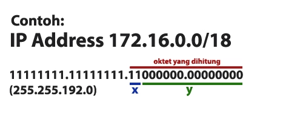

Subnetting
sebenarnya gatau untuk apa, tapi yang penting bisa ;)

Analisa: 172.16.0.0 berarti kelas B, dengan Subnet Mask /18 berarti
11111111.11111111.11000000.00000000 (255.255.192.0).
perhitungan:
- Jumlah Subnet = 2x, dimana x adalah banyaknya binari 1 pada 2 oktet terakhir. Jadi Jumlah Subnet adalah 22 = 4 subnet
- Jumlah Host per Subnet = 2y – 2, dimana y adalah adalah kebalikan dari x yaitu banyaknya binari 0 pada 2 oktet terakhir. Jadi jumlah host per subnet adalah 214 – 2 = 16.382 host
- Blok Subnet = 256 – 192 = 64. Subnet berikutnya adalah 64 + 64 = 128, dan 128+64=192. Jadi subnet lengkapnya adalah 0, 64, 128, 192.
- Alamat host dan broadcast yang valid?
Subnet
172.16.0.0
172.16.0.128
172.16.1.0
...172.16.255.128
Host Pertama
172.16.0.1
172.16.0.129
172.16.1.1
...172.16.255.129
Host Terakhir
172.16.0.126
172.16.0.254
172.16.1.126
...172.16.255.254
Broadcast
172.16.0.127
172.16.0.255
172.16.1.127
...172.16.255.255
Intinya, Gampang Saja. Tetap tenang dan Lanjutkan.